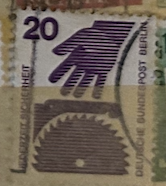
| SOURCE | TITLE| IMAGE MATCH | click to source page |
| www.ebay.com | Stamps FRD (FR.Germany) 1971 Mi 696A Rc with green counting ... | 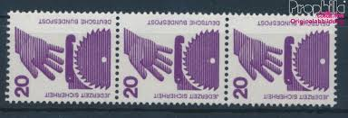 |
| www.ebay.com | Berlin #Mi404C/D MNH 1974 Circular Saw | eBay | 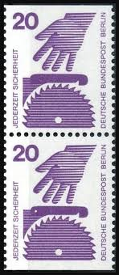 |
| www.amazon.com | Amazon.com: FRD (FR.Germany) 696A Ra with Counting Number ... | 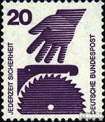 |
| www.ebay.com | West Germany - 1971 - Information About Accidents - 20Pfg ... | 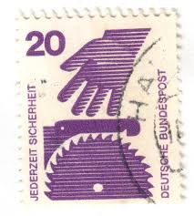 |
| www.amazon.com | Amazon.com: Berlin (West) W46 unmounted Mint/Never hinged ... | 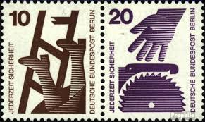 |
| www.dreamstime.com | Jederzeit Stock Photos - Free & Royalty-Free Stock Photos ... | 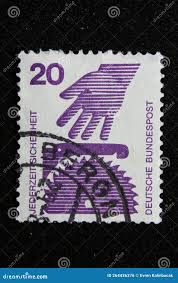 |
| www.ebid.net | GERMANY, Accidents, Ladder and Saw, pair, brown & violet ... | 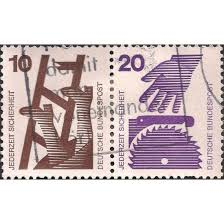 |
| www.ebay.com | BERLIN GERMANY Mi. #404ARd scarce mint MNH stamp w/ blue ... | 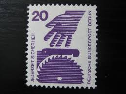 |
| www.amazon.com | Amazon.com: Berlin (West) 404DZ with Printing Signs ... | 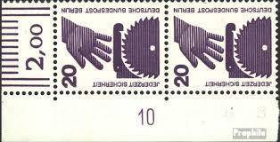 |
| oldthing.de | Bundesrep. Deutschland Nr 696 C Q | Briefmarken günstig | 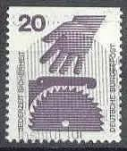 |
| www.briefmarken.cc | Deutschland, MiNr. 696 A Viererblock, Ecke li. oben ... | 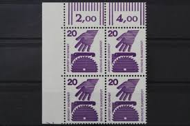 |
| www.briefmarken-brd-berlin.de | Bund 696 EZM 400-er Rolle mit schwarzer Nummer - briefmarken ... | 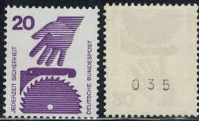 |
| mh-versand.de | MH 20aIa ** br. Rand | BU-MH020-01-01-08 | 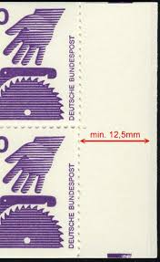 |
| www.alamy.com | A stamp printed in Germany, is dedicated to Accident ... | 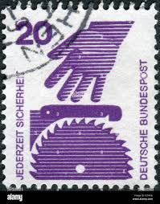 |
| briefmarken-baumeister.de | Mi. Nr 696 Eckrandviererblock links oben mit Druckerzeichen ... | 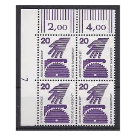 |
| www.ebay.com | Berlin (West) 404C/D vertical Couple unmounted mint / never ... | 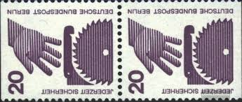 |
| forum.bund-forum.de | www.bund-forum.de • View topic - Was ist ein Druckerzeichen ... | 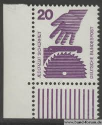 |
| www.mercadolibre.com.ar | Alemania Occidental Bdr, Año 1971 Michel Nr. 696 P F I I I ... | 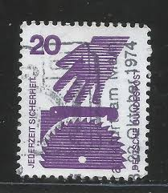 |
| www.tambrestan.com | 1 عدد تمبر سری پستی - پیشگیری از حوادث - از بوکلت - 20 فنیک ... | 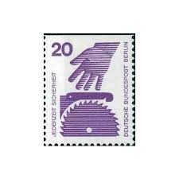 |
| www.alamy.com | Health stamp hi-res stock photography and images - Alamy | 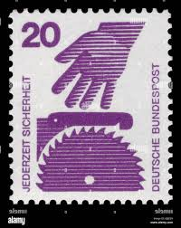 |
| jp.mercari.com | 外国切手11枚完揃（ドイツ：事故防止シリーズ） - メルカリ | 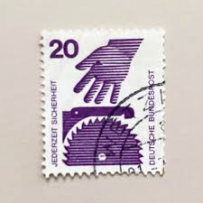 |
| www.todocoleccion.net | 145246 mnh alemania federal 1968 centenario de - Compra ... | 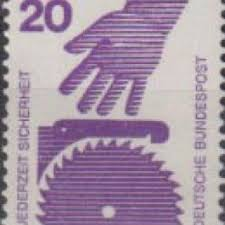 |
| jenikirbyhistory.getarchive.net | 59 1971 deutsche bundespost stamps Images: PICRYL ... | 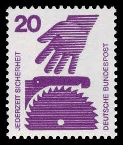 |
| www.mysticstamp.com | 4717-20 - 2012 Waves of Color - Mystic Stamp Company | 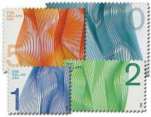 |
| meshok.net | 696» на Мешке по возрастанию цены | 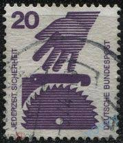 |
| www.buyhungarianstamps.com | #1582-1588 Czechoslovakia - Cultural Personalities of the ... | 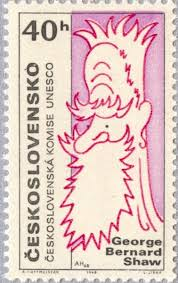 |
| en.todocoleccion.net | sello alemán. deutsche bundespost 40 pf. jederz - Buy ... | 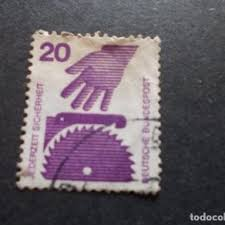 |
| www.philbansner.com | Stamps: Booklet Pane (Page 5) | 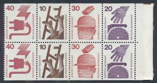 |
| www.bobshop.co.za | Germany & Colonies - 1971 BRD MiNr 696 A R with black number ... | 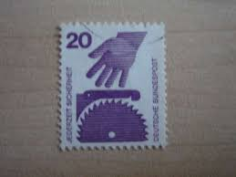 |
| www.mysticstamp.com | 1818-20 - 1981 18c B-Rate Eagles, Set of 3 Stamps - Mystic ... | 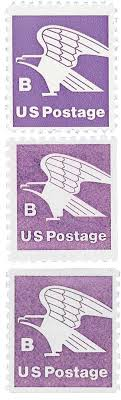 |
| findyourstampsvalue.com | Value of jederzeit sicherheit deutsche bundespost 20 stamps | 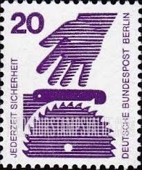 |
| www.bidcurios.com | Belgium 1947, Parcel Postage Stamps Issued for Use by ... | 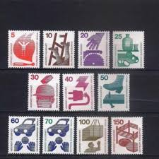 |
| a-g-i.org | Hans Günter Schmitz – Alliance Graphique Internationale (AGI ... | 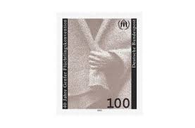 |
| www.pictorem.com | Dolly Parton Stamps art by The Hypnotized Art Wall Art | 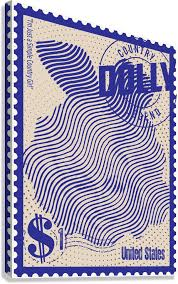 |
| designreviewed.com | Stamps - Design Reviewed | 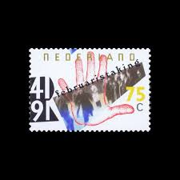 |
| satura-shop.com | W40 Zusammendruck Unfallverhütung 20+30 Pf | 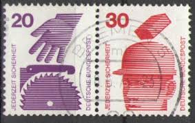 |
| katzauction.com | Netherlands 10 Gulden 1997 PMG 69 EPQ Superb Gem Unc | Katz ... | 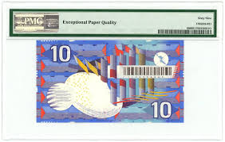 |
| www.swissinfo.ch | Swiss Post branches out into wooden stamps - SWI swissinfo.ch | 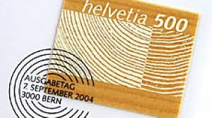 |
| www.linns.com | A personal stamp exhibition odyssey: from Ameripex to Pacific 97 | 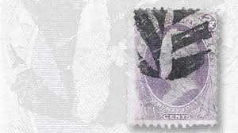 |
| forum.dguv.de | Geschichte der Selbstverwaltung in der Unfallversicherung ... | 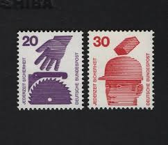 |
| www.old-stamps.com | Jederzeit Sicherheit / Deutsche Bundespost 1972 | 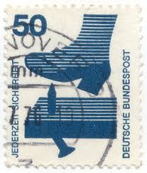 |
| www.alamy.com | Postage stamp from the Federal Republic of Germany in the ... | 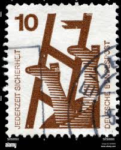 |
| www.baroquemusic.org | Diderik Buxtehude organ & choral music | 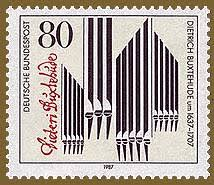 |
| www.psychologytoday.com | The Creative Process in the Writing of "The Iceman Cometh ... | 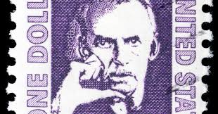 |
| www.hundertwasser-stamps.com | Hundertwasser Stamp Resource: The Second Skin, The Right to ... | 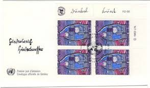 |
| theconversation.com | Why no living people appear on US postage stamps | |
| thestampforum.boards.net | Roads, Highways, Traffic and Traffic Safety on Stamps | The ... |  |
| postalmuseum.si.edu | B Rate (18c) Eagle single | National Postal Museum | 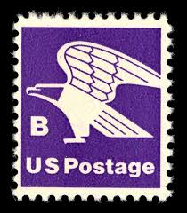 |
| www.upu.int | UPU Service Stamps | 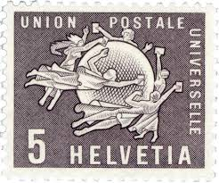 |
| www.instagram.com | 🪦 “LONG LIVE” THE BLACK PARADE 🪦 @mychemicalromance swipe ... | 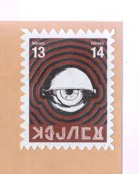 |
| stampaday.wordpress.com | International Left Handers Day – A Stamp A Day | 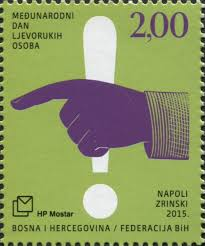 |
| www.allarts.org | How the United States Postal Service began circulating ... | |
| www.reddit.com | Any information the stamp? : r/AustralianCoins | |
| en.wikipedia.org | Postage stamps and postal history of Lithuania - Wikipedia | |
| stampforgeries.com | Stamp Forgeries of Lithuania | Stampforgeries of the World | |
| www.facebook.com | 👉🏼 🇩🇪 GERMANY 🇩🇪 | |
| blog.cottonandflax.com | Snail Mail Saturday – Vintage Postage Stamps – Blog – Cotton ... | |
| caseymoore.com | Philately in the Blood - Casey Moore | |
| nickgromicko.com | Rare Stamps – Nick Gromicko |